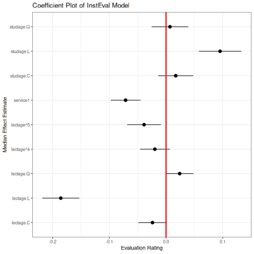
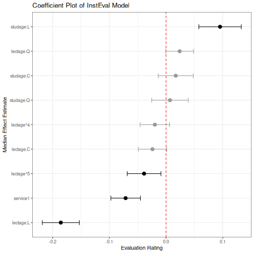
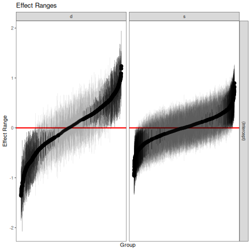
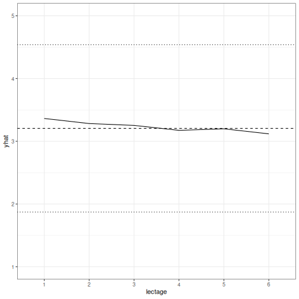
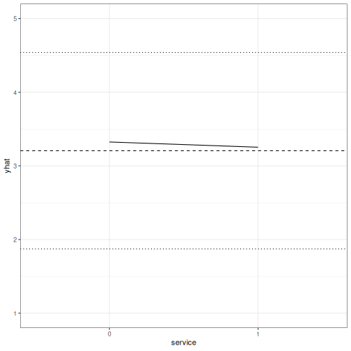
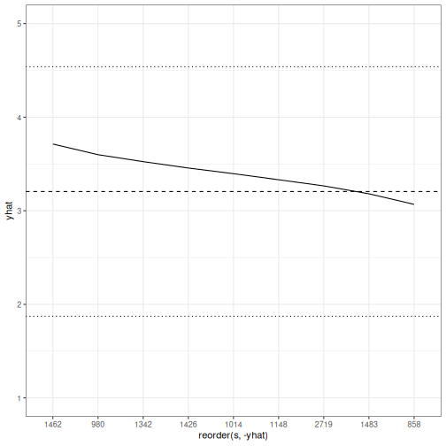
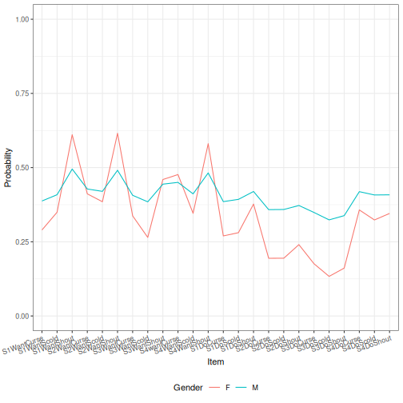
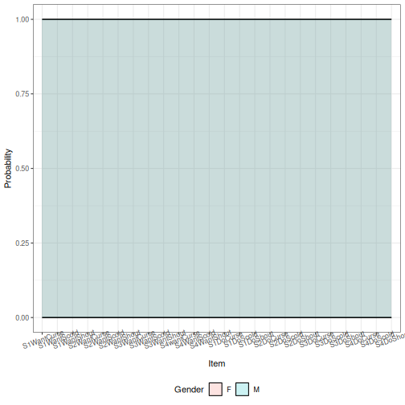
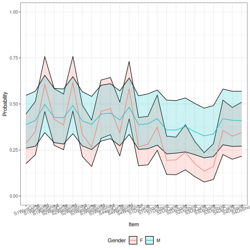

An Introduction to merTools
Jared Knowles and Carl Frederick
Written 2015-05-27 (last updated 2026-05-29)
Source:vignettes/merToolsIntro.Rmd
merToolsIntro.RmdIntroduction
Working with generalized linear mixed models (GLMM) and linear mixed
models (LMM) has become increasingly easy with the advances in the
lme4 package recently. As we have found ourselves using
these models more and more within our work, we, the authors, have
developed a set of tools for simplifying and speeding up common tasks
for interacting with merMod objects from lme4.
This package provides those tools.
Illustrating Model Effects
As the complexity of the model fit grows, it becomes harder and harder to interpret the substantive effect of parameters in the model.
Let’s start with a medium-sized example model using the
InstEval data provided by the lme4 package.
These data represent university lecture evaluations at ETH Zurich made
by students. In this data, s is an individual student,
d is an individual lecturer, studage is the
semester the student is enrolled, lectage is how many
semesters back the lecture with the rating took place, dept
is the department of the lecture, and y is an integer 1:5
representing the ratings of the lecture from “poor” to “very good”:
library(lme4)
head(InstEval)
#> s d studage lectage service dept y
#> 1 1 1002 2 2 0 2 5
#> 2 1 1050 2 1 1 6 2
#> 3 1 1582 2 2 0 2 5
#> 4 1 2050 2 2 1 3 3
#> 5 2 115 2 1 0 5 2
#> 6 2 756 2 1 0 5 4
str(InstEval)
#> 'data.frame': 73421 obs. of 7 variables:
#> $ s : Factor w/ 2972 levels "1","2","3","4",..: 1 1 1 1 2 2 3 3 3 3 ...
#> $ d : Factor w/ 1128 levels "1","6","7","8",..: 525 560 832 1068 62 406 3 6 19 75 ...
#> $ studage: Ord.factor w/ 4 levels "2"<"4"<"6"<"8": 1 1 1 1 1 1 1 1 1 1 ...
#> $ lectage: Ord.factor w/ 6 levels "1"<"2"<"3"<"4"<..: 2 1 2 2 1 1 1 1 1 1 ...
#> $ service: Factor w/ 2 levels "0","1": 1 2 1 2 1 1 2 1 1 1 ...
#> $ dept : Factor w/ 14 levels "15","5","10",..: 14 5 14 12 2 2 13 3 3 3 ...
#> $ y : int 5 2 5 3 2 4 4 5 5 4 ...Starting with a simple model:
m1 <- lmer(y ~ service + lectage + studage + (1|d) + (1|s), data=InstEval)After fitting the model we can make use of the first function
provided by merTools, fastdisp which modifies
the function arm:::display to more quickly display a
summary of the model without calculating the model sigma:
library(merTools)
fastdisp(m1)
#> lmer(formula = y ~ service + lectage + studage + (1 | d) + (1 |
#> s), data = InstEval)
#> coef.est coef.se
#> (Intercept) 3.22 0.02
#> service1 -0.07 0.01
#> lectage.L -0.19 0.02
#> lectage.Q 0.02 0.01
#> lectage.C -0.02 0.01
#> lectage^4 -0.02 0.01
#> lectage^5 -0.04 0.02
#> studage.L 0.10 0.02
#> studage.Q 0.01 0.02
#> studage.C 0.02 0.02
#>
#> Error terms:
#> Groups Name Std.Dev.
#> s (Intercept) 0.33
#> d (Intercept) 0.52
#> Residual 1.18
#> ---
#> number of obs: 73421, groups: s, 2972; d, 1128
#> AIC = 237655We see some interesting effects. First, our decision to include
student and lecturer effects seems justified as there is substantial
variance within these groups. Second, there do appear to be some effects
by age and for lectures given as a service by an outside lecturer. Let’s
look at these in more detail. One way to do this would be to plot the
coefficients together in a line to see which deviate from 0 and in what
direction. To get a confidence interval for our fixed effect
coefficients we have a number of options that represent a tradeoff
between coverage and computation time – see confint.merMod
for details.
An alternative is to simulate values of the fixed effects from the
posterior using the function arm::sim. Our next tool,
FEsim, is a convenience wrapper to do this and provide an
informative data frame of the results.
feEx <- FEsim(m1, 1000)
cbind(feEx[,1] , round(feEx[, 2:4], 3))
#> feEx[, 1] mean median sd
#> 1 (Intercept) 3.226 3.226 0.020
#> 2 service1 -0.072 -0.071 0.013
#> 3 lectage.L -0.185 -0.186 0.017
#> 4 lectage.Q 0.024 0.024 0.013
#> 5 lectage.C -0.024 -0.024 0.013
#> 6 lectage^4 -0.020 -0.020 0.013
#> 7 lectage^5 -0.038 -0.039 0.015
#> 8 studage.L 0.096 0.095 0.019
#> 9 studage.Q 0.006 0.007 0.016
#> 10 studage.C 0.017 0.017 0.016We can present these results graphically, using
ggplot2:
library(ggplot2)
ggplot(feEx[feEx$term!= "(Intercept)", ]) +
aes(x = term, ymin = median - 1.96 * sd,
ymax = median + 1.96 * sd, y = median) +
geom_pointrange() +
geom_hline(yintercept = 0, size = I(1.1), color = I("red")) +
coord_flip() +
theme_bw() + labs(title = "Coefficient Plot of InstEval Model",
x = "Median Effect Estimate", y = "Evaluation Rating")
#> Warning: Using `size` aesthetic for lines was deprecated in ggplot2 3.4.0.
#> ℹ Please use `linewidth` instead.
#> This warning is displayed once per session.
#> Call `lifecycle::last_lifecycle_warnings()` to see where this warning was
#> generated.
However, an easier option is:
plotFEsim(feEx) +
theme_bw() + labs(title = "Coefficient Plot of InstEval Model",
x = "Median Effect Estimate", y = "Evaluation Rating")
Random Effects
Next, we might be interested in exploring the random effects. Again, we create a dataframe of the values of the simulation of these effects for the individual levels.
reEx <- REsim(m1)
head(reEx)
#> groupFctr groupID term mean median sd
#> 1 s 1 (Intercept) 0.1867451 0.2108076314 0.3015230
#> 2 s 2 (Intercept) -0.0251678 0.0006431095 0.3390197
#> 3 s 3 (Intercept) 0.3098553 0.3219927161 0.2811772
#> 4 s 4 (Intercept) 0.2305368 0.2428994747 0.2838737
#> 5 s 5 (Intercept) 0.1085762 0.1061684358 0.3096078
#> 6 s 6 (Intercept) 0.1125153 0.0945106543 0.2257176The result is a dataframe with estimates of the values of each of the
random effects provided by the arm::sim() function.
groupID represents the identifiable level for the variable for
one random effect, term represents whether the simulated values
are for an intercept or which slope, and groupFctr identifies
which of the (1|x) terms the values represent. To make
unique identifiers for each term, we need to use both the
groupID and the groupFctr term in case these
two variables use overlapping label names for their groups. In this
case:
Most important is producing caterpillar or dotplots of these terms to
explore their variation. This is easily accomplished with the
dotplot function:
However, these graphics do not provide much control over the results.
Instead, we can use the plotREsim function in
merTools to gain more control over plotting of the random
effect simulations.
p1 <- plotREsim(reEx)
p1
The result is a ggplot2 object which can be modified however the user sees fit. Here, we’ve established that most student and professor effects are indistinguishable from zero, but there do exist extreme outliers with both high and low averages that need to be accounted for.
Substantive Effects
A logical next line of questioning is to see how much of the
variation in a rating can be caused by changing the student rater and
how much is due to the fixed effects we identified above. This is a very
difficult problem to solve, but using simulation we can examine the
model behavior under a range of scenarios to understand how the model is
reflecting changes in the data. To do this, we use another set of
functions available in merTools.
The simplest option is to pick an observation at random and then
modify its values deliberately to see how the prediction changes in
response. merTools makes this task very simple:
example1 <- draw(m1, type = 'random')
head(example1)
#> y service lectage studage d s
#> 5587 2 0 3 8 1212 204The draw function takes a random observation from the
data in the model and extracts it as a dataframe. We can now do a number
of operations to this observation:
# predict it
predict(m1, newdata = example1)
#> 5587
#> 3.324069
# change values
example1$service <- "1"
predict(m1, newdata = example1)
#> 5587
#> 3.253225More interesting, let’s programmatically modify this observation to see how the predicted value changes if we hold everything but one variable constant.
example2 <- wiggle(example1, varlist = "lectage",
valueslist = list(c("1", "2", "3", "4", "5", "6")))
example2
#> y service lectage studage d s
#> 5587 2 1 1 8 1212 204
#> 55871 2 1 2 8 1212 204
#> 55872 2 1 3 8 1212 204
#> 55873 2 1 4 8 1212 204
#> 55874 2 1 5 8 1212 204
#> 55875 2 1 6 8 1212 204The function wiggle allows us to create a new dataframe
with copies of the variable that modify just one value. Chaining
together wiggle calls, we can see how the variable behaves
under a number of different scenarios simultaneously.
example2$yhat <- predict(m1, newdata = example2)
ggplot(example2, aes(x = lectage, y = yhat)) + geom_line(aes(group = 1)) +
theme_bw() + ylim(c(1, 5)) +
geom_hline(yintercept = mean(InstEval$y), linetype = 2) +
geom_hline(yintercept = mean(InstEval$y) + sd(InstEval$y), linetype = 3) +
geom_hline(yintercept = mean(InstEval$y) - sd(InstEval$y), linetype = 3)
The result allows us to graphically display the effect of each level
of lectage on an observation that is otherwise identical.
This is plotted here against a horizontal line representing the mean of
the observed ratings, and two finer lines showing plus or minus one
standard deviation of the mean.
This is nice, but selecting a random observation is not very satisfying as it may not be very meaningful. To address this, we can instead take the average observation:
example3 <- draw(m1, type = 'average')
example3
#> y service lectage studage d s
#> 1 3.205745 0 1 6 1510 1014Here, the average observation is identified based on either the modal observation for factors or on the mean for numeric variables. Then, the random effect terms are set to the level equivalent to the median effect – very close to 0.
example3 <- wiggle(example1, varlist = "service",
valueslist = list(c("0", "1")))
example3$yhat <- predict(m1, newdata = example3)
ggplot(example3, aes(x = service, y = yhat)) + geom_line(aes(group = 1)) +
theme_bw() + ylim(c(1, 5)) +
geom_hline(yintercept = mean(InstEval$y), linetype = 2) +
geom_hline(yintercept = mean(InstEval$y) + sd(InstEval$y), linetype = 3) +
geom_hline(yintercept = mean(InstEval$y) - sd(InstEval$y), linetype = 3)
Here we can see that for the average observation, whether the lecture is outside of the home department has a very slight negative effect on the overall rating. Might the individual professor or student have more of an impact on the overall rating? To answer this question we need to wiggle the same observation across a wide range of student or lecturer effects.
How do we identify this range? merTools provides the
REquantile function which helps to identify which levels of
the grouping terms correspond to which quantile of the magnitude of the
random effects:
REquantile(m1, quantile = 0.25, groupFctr = "s")
#> [1] "2518"
REquantile(m1, quantile = 0.25, groupFctr = "d")
#> [1] "18"Here we can see that group level 2518 corresponds to the 25th
percentile of the effect for the student groups, and level
REquantile(m1, quantile = 0.25, groupFctr = "d")
corresponds to the 25th percentile for the instructor group. Using this
information we can reassign a specific observation to varying magnitudes
of grouping term effects to see how much they might influence our final
prediction.
example4 <- draw(m1, type = 'average')
example4 <- wiggle(example4, varlist = "s",
list(REquantile(m1, quantile = seq(0.1, 0.9, .1),
groupFctr = "s")))
example4$yhat <- predict(m1, newdata = example4)
ggplot(example4, aes(x = reorder(s, -yhat), y = yhat)) +
geom_line(aes(group = 1)) +
theme_bw() + ylim(c(1, 5)) +
geom_hline(yintercept = mean(InstEval$y), linetype = 2) +
geom_hline(yintercept = mean(InstEval$y) + sd(InstEval$y), linetype = 3) +
geom_hline(yintercept = mean(InstEval$y) - sd(InstEval$y), linetype = 3)
This figure is very interesting because it shows that moving across the range of student effects can have a larger impact on the score than the fixed effects we observed above. That is, getting a “generous” or a “stingy” rater can have a substantial impact on the final rating.
But, we can do even better. First, we can move beyond the average
observation by taking advantage of the varList option to
the function which allows us to specify a subset of the data to compute
an average for.
subExample <- list(studage = "2", lectage = "4")
example5 <- draw(m1, type = 'average', varList = subExample)
example5
#> y service lectage studage d s
#> 1 3.087193 0 4 2 1510 1014Now we have the average observation with a student age of 2 and a lecture age of 4. We can then follow the same procedure as before to explore the effects on our subsamples. Before we do that, let’s fit a slightly more complex model that includes a random slope.
data(VerbAgg)
m2 <- glmer(r2 ~ Anger + Gender + btype + situ +
(1|id) + (1 + Gender|item), family = binomial,
data = VerbAgg)
#> Warning in checkConv(attr(opt, "derivs"), opt$par, ctrl = control$checkConv, : Model failed to converge with max|grad| = 0.0882443 (tol = 0.002, component 1)
#> See ?lme4::convergence and ?lme4::troubleshooting.
example6 <- draw(m2, type = 'average', varList = list("id" = "149"))
example6$btype <- "scold"
example6$situ <- "self"
tempdf <- wiggle(example6, varlist = "Gender", list(c("M", "F")))
tempdf <- wiggle(tempdf, varlist = "item",
list(unique(VerbAgg$item)))
tempdf$yhat <- predict(m2, newdata = tempdf, type = "response",
allow.new.levels = TRUE)
ggplot(tempdf, aes(x = item, y = yhat, group = Gender)) +
geom_line(aes(color = Gender))+
theme_bw() + ylim(c(0, 1)) +
theme(axis.text.x = element_text(angle = 20, hjust=1),
legend.position = "bottom") + labs(x = "Item", y = "Probability")
Here we’ve shown that the effect of both the intercept and the gender
slope on item simultaneously affect our predicted value. This results in
the two lines for predicted values across the items not being parallel.
While we can see this by looking at the results of the summary of the
model object, using fastdisp in the merTools
package for larger models, it is not intuitive what that effect looks
like across different scenarios. merTools has given us the
machinery to investigate this.
Uncertainty
The above examples make use of simulation to show the model behavior after changing some values in a dataset. However, until now, we’ve focused on using point estimates to represent these changes. The use of predicted point estimates without incorporating any uncertainty can lead to overconfidence in the precision of the model.
In the predictInterval function, discussed in more
detail in another package vignette, we provide a way to incorporate
three out of the four types of uncertainty inherent in a model. These
are:
- Overall model uncertainty
- Uncertainty in fixed effect values
- Uncertainty in random effect values
- Uncertainty in the distribution of the random effects
1-3 are incorporated in the results of predictInterval,
while capturing 4 would require making use of the bootMer
function – options discussed in greater detail elsewhere. The main
advantage of predictInterval is that it is fast. By
leveraging the power of the arm::sim() function, we are
able to generate prediction intervals for individual observations from
very large models very quickly. And, it works a lot like
predict:
exampPreds <- predictInterval(m2, newdata = tempdf,
type = "probability", level = 0.8)
#> Warning: For binomial GLMMs, include.resid.var = TRUE simulates from the
#> conditional binomial distribution (n-trial binomial simulation).
#> This is the theoretically correct approach.
#> To get predictions without residual variance, set include.resid.var = FALSE.
tempdf <- cbind(tempdf, exampPreds)
ggplot(tempdf, aes(x = item, y = fit, ymin = lwr, ymax = upr,
group = Gender)) +
geom_ribbon(aes(fill = Gender), alpha = I(0.2), color = I("black"))+
theme_bw() + ylim(c(0, 1)) +
theme(axis.text.x = element_text(angle = 20),
legend.position = "bottom")+ labs(x = "Item", y = "Probability")
Here we can see there is barely any gender difference in terms of area of potential prediction intervals. However, by default, this approach includes the residual variance of the model. If we instead focus just on the uncertainty of the random and fixed effects, we get:
exampPreds <- predictInterval(m2, newdata = tempdf,
type = "probability",
include.resid.var = FALSE, level = 0.8)
tempdf <- cbind(tempdf[, 1:8], exampPreds)
ggplot(tempdf, aes(x = item, y = fit, ymin = lwr, ymax = upr,
group = Gender)) +
geom_ribbon(aes(fill = Gender), alpha = I(0.2), color = I("black"))+
geom_line(aes(color = Gender)) +
theme_bw() + ylim(c(0, 1)) +
theme(axis.text.x = element_text(angle = 20),
legend.position = "bottom") + labs(x = "Item", y = "Probability")
Here, more difference emerges, but we see that the differences are not very precise.